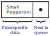
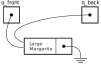
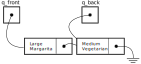
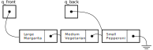
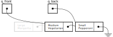

CSCE 121: Introduction to Program Design and Concepts
Lab Exercise Ten
Objective
The purpose of this lab is to explore the use of new and delete for dynamic
memory allocation and management. In particular, you're going to use these, along with pointers, to
make a singly-linked list queue.
Some advice
The first parts of the lab exercise, specifically those tasks under the heading "Getting the Basics Working", are extremely straightforward. It'll require some time just to put all the pieces together, but there's nothing that is conceptually difficult. It is, therefore, recommended that you have this much completed before attending your lab. Doing so will permit you to use the lab time effectively, as you can get help in setting up pointers, maintaining, and traversing the queue. This will likely require debugging, which is where you can really benefit from the eyeballs of others. If you really get stuck tracking down a bug, consider posting your code on piazza! Remember that the labs are designed so that you can get help from others.
Tracking pizza orders
System Requirements
As part of your gig as a consulting programmer, you've been approached by a local pizza restaurant. They'd like help setting up a computer system to manage their ordering process. You meet to talk with the owner, engaging her in a detailed discussion. Through this you conduct a requirements analysis, a software engineering term, meaning that you establish the restaurant's needs and determine the functional properties they desire from the new software. (It also allows you to estimate your time and to provide them with an estimate of the cost.)
After the discussion, you've established the following:
- As they're starting small, they have only one computer. But they still need some software to make sure they don't lose track of orders as they are placed and prepared. A few of the employees are quite absent-minded and experience has shown that customers don't appreciate being forgotten and, as the expression goes, their orders falling through the cracks.
- They'd like the system to present a simple menu with three options: Enter order, Prepare order, Quit.
- When you enter an order, you need
capture all the details for the order.
- Pizzas come in a small set of varieties: they can be small, medium, or large; their crust can be either skinny or thick; and it is easy to enumerate the flavors they offer: Margarita, Pepperoni, Hawaiian, Vegetarian; finally, there is also an extra cheese option.
- Also mark whether the payment was via cash or debit card.
- The kitchen uses the prepare order menu option. They want it to pull up the order that has been in the system the longest (i.e., the earliest placed order still resident in the system) and to display the details of that pizza. The system then prompts them with: "Completed? [Y/N]" In either case, they are returned to the main menu. If they entered yes, the order is removed. If not, the next time they take the prepare order menu option, the same pizza will be shown (it is still the earliest placed order, after all).
Getting the Basics Working
You ponder this for a little bit. And make the following design choices for your program. You don't know beforehand how much throughput they'll have, so you opt to use pointers along with dynamic memory allocation to store the data.
- You decide to use a
structto represent the details of the pizza. Step 1: define the type with the basic pizza entries now, postponing treatment of the queuing aspects.
struct pizza_t {
... // define the data fields appropriately
};pizza_t.
pizza_t* create_new_pizza_order()
{
... // allocates a new pizza_t
... // and prompts the user, assigning the data fields appropriately
}
void output_pizza_data(pizza_t *p)
{
... // display the pizza_t nicely
}
Designing the Queue
The orders are processed in strict sequence, one after another, as if flowing in a pipeline. The primary challenge is that at certain times, e.g., when business peaks around lunchtime, there will be more elements in the pipeline than at other times. We can achieve the appropriate functionality with a data structure called a queue, which we'll implement via a linked list. Sometimes a queue is called a FIFO (first in, first out) structure, a rather descriptive name. (In the lectures we've seen stacks —including the call stack— can you guess the analogous name for a stack?)
Your main task is to implement a queue. The following will guide you through the steps to do this, but you may find it helpful to read all the steps before beginning:
-

The basic idea is that, as they come in, we'll chain pizza orders together, one after the other.
Each element need only have a reference to the subsequent element, i.e., the pizza that came in directly after it.
We can do this easily by adding a pointer to ourpizza_astructure. The figure on the right shows this as a little box containing a dot, which appears in addition to the data describing the particular deliciousness. Step 1: modify the definition of yourstructaccordingly. -
We keep track of the data by having two references to each end of the queue.
The back of the queue is the end of the chain that is the last order that was placed. (When you walk up to an ATM, you can immediately tell who was the last person to arrive,
and this is the all the information that you need in order to know where to stand.)
I denote this with
q_backin my code and in the figures below. The front of the queue, with a pointerq_front, also refers to an end of the chain and it is the oldest order in this case. Of course, if there is only one order, these two pointers may refer to the same thing, as in the following example:

Note that because there is nothing after the large margarita, its pointer to the next element in the queue (which we'll denote withnext) doesn't refer to any pizza. -
Suppose that a new order is placed for a medium vegetarian pizza. This order goes to the back of the queue. Which means that:
(1) the newly-order pizza's
nextpointer doesn't point to anything; (2) the large margarita (i.e., the erstwhileq_backpizza) updates itsnextpointer; and (3) theq_backdestination must be updated to refer to the vegetarian option.

This operation follows a well-defined pattern and the pattern doesn't depend on the fact that there was only one element already in the queue—the process would be identical if there were 1 million preexisting elements in the queue. Follow the logic for the small pepperoni order that was just placed:

Step 2: define the variables that track the queue ends and write a function to add orders to the back of the queue. You'll have to initialize yourq_frontandq_backpointers to something. -
At this point, the customers take their seats. So the pizza parlor employee dons their apron and returns to the brick oven. Using the software's menu
system they call up the pizza that they need to start tossing the dough for. They get the large margarita, of course. Once they mark that as completed, the
queue has state depicted by this diagram:

Step 3: add code to display the pizza referred to viaq_frontand then to remove it from the queue. Once it has been removed, make sure you free the memory that was allocated to it.
{kind=link}
{kind=link}
{kind=link}
{kind=link}
|
|
{kind=link}
{kind=link}
It can be challenging to make sure your code is correct. Here are some things to try in order to test your implementation:
- Ensure that attempting to remove an item from an empty queue doesn't result in a crash.
- Make sure that all the allocated items in the queue are deleted and your program returns the memory to the system, after you use the Quit option from the menu.
- Check that once you add k items and then remove k items: (i) you get the same items back, (ii) you get them back in the right order, and (iii) the queue is in the appropriate (empty) state at the end, and, further, that (iv) from this empty state the queue can correctly receive (enqueue is the right verb here) more items again.
- Some tools can be very helpful in tracking memory leaks. Try the following for your program:
valgrind --leak-check=full --show-leak-kinds=all ./my_lab10_pizza_parlor_is_amazeballs_yo
Phone Orders
It seems that your software has been a hit. After the first week, you stopped receiving telephone calls from pizza chefs at all hours of the night. Those first few days, they'd call you angrily to report that the program had crashed, exiting and printing some mysterious message about a SEGFAULT. But you've ironed out those wrinkles, and more and more pizza is being sold. So you've now got a contract to add a new feature to the system.
They'd like to be able to mark that certain orders are being placed by phone for delivery. Step 1: accommodate this request by adding a boolean variable to keep track of this for each order. You'll need to update your functions for inputting and displaying orders.
They'd like to be able to see a report showing the phone orders still being processed (i.e., currently in the queue). Step 2: write a function that will produce this report. To do this, you need to sweep from one end of the queue to the other, outputting only those orders that were placed by telephone.
The following feature is particularly lucrative, as it will allow you to bill more for the product (i.e., will take a bit more time, but should be interesting to write). Once phone order items are completed they're removed from the queue, the same as all the others. But now, instead, place them in another queue, the queue of items awaiting delivery. Step 3: With only minor adjustments, you should be able to realize this feature as well. You'll also need to add a menu option for delivery drivers to remove items as they pick them up.